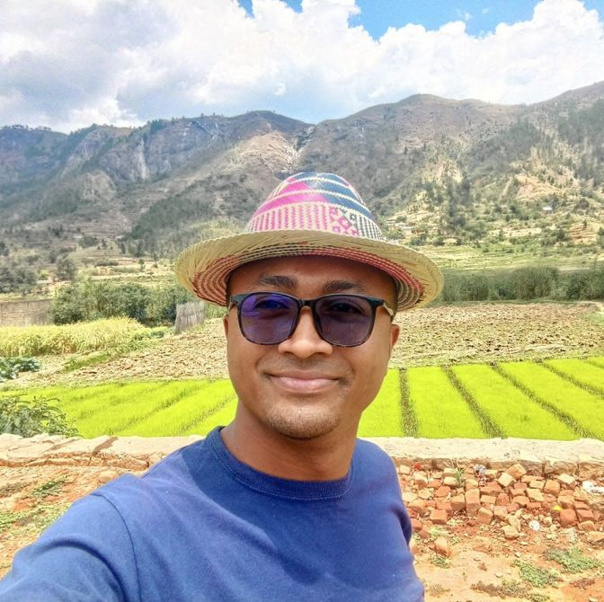

Deranjanahary | WDD 130
Hello! My name is Deranjanahary. I'm from Antananarivo, Madagascar. I'm a Civil Engineer but passionate about coding. I'm currently studying Web Development at BYU-Idaho. I'm really excited about this course because I want to master Web and Software Development, it will surely open many opportunities for me in the future.